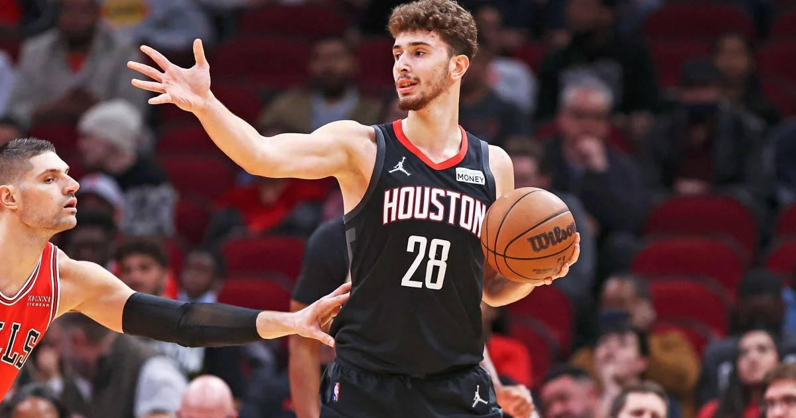

Sengun's Triple-Double Passes Olajuwon as Rockets Beat Suns 116-104
Alperen Sengun posted 23 points, 11 rebounds and 11 assists to pass Hakeem Olajuwon for second-most triple-doubles in Rockets history — on the same night Kevin Durant joined the 33,000-point club.

Disclosure: this post contains affiliate links. I earn a commission on qualifying purchases.
Alperen Sengun didn't just complete a triple-double on Wednesday night. He passed a Rockets legend to do it.
Sengun finished with 23 points, 11 rebounds and 11 assists as Houston beat the Phoenix Suns 116-104 in the NBA Cup group-stage finale at Toyota Center, locking up the win with a late run after Phoenix had clawed back within two.
The line
Points: 23
Rebounds: 11
Assists: 11
Field goals: 9-of-17
Three-pointers: 3-of-5
Minutes: 32
Seven of his 11 rebounds came on the offensive glass, and Houston won the rebounding battle 51-38 overall.
Passing The Dream
The triple-double was Sengun's third of the season — and the 15th of his Rockets career, moving him past Hakeem Olajuwon into second place on the franchise's all-time triple-double list. He'd recorded his previous one just two games earlier, on November 20 in Denver.
He clinched this one with an assist at the 3:49 mark of the fourth quarter, then kept making plays after it: a second-chance basket off his own offensive rebound pushed the lead to 109-100, and a mean dunk with 5:30 left — driving past Khaman Maluach after taking the ball at the top of the key — had put Houston up 101-97 and cooled Phoenix's rally.
How the finish played out
Phoenix refused to go away. The Suns cut the deficit to 99-97 in the fourth before Houston closed on a 17-7 run. Fred VanVleet supplied the daggers, drilling a three with 4:32 left to make it 104-98 and another at the 1:45 mark for a 112-102 lead. He finished with 13 points and six assists.
Devin Booker led Phoenix with 25 points in the loss.
A second milestone in the same game
Sengun wasn't the only Rocket making history. Kevin Durant scored 20 points with 10 rebounds and became the fifth player in NBA history to reach 33,000 career points. Two franchise milestones, one night, one win.
What it means
Houston improved to 14-5, including 9-1 at home, and secured the Emirates NBA Cup West Group A win. Sengun is now averaging near 22 points, 9.3 rebounds and 7.2 assists on the season — and at 24 years old, he's already second in franchise history in triple-doubles.
Watch
Source: SUNS at ROCKETS | EMIRATES NBA CUP 🏆 | FULL GAME HIGHLIGHTS | November 25, 2026 — NBA. Full-game highlights including Sengun's 23-point, 11-rebound, 11-assist triple-double and the Rockets' late run to the 116-104 win.
Gear up: Fanatics